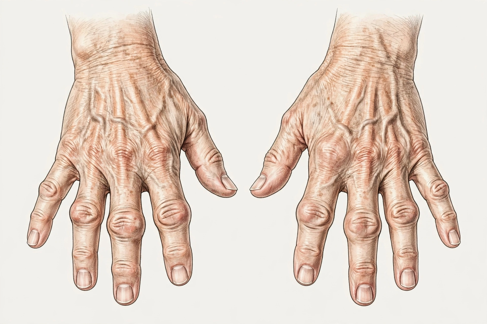

From Wikipedia, the free encyclopedia
| Rheumatoid arthritis | |
 Advanced rheumatoid arthritis of the hands | |
| Specialty | Rheumatology, immunology |
| Symptoms | Warm, swollen, painful joints; stiffness; fatigue |
| Usual onset | Middle age |
| Duration | Long term (chronic) |
| Causes | Autoimmune; genetic and environmental factors |
| Risk factors | Smoking; female sex; HLA-DR4 "shared epitope" |
| Frequency | About 0.5–1% of adults worldwide |
| Treatment | DMARDs (e.g. methotrexate), biologics, corticosteroids, physiotherapy |
Rheumatoid arthritis (RA) is a long-term autoimmune disorder that primarily affects joints. It typically results in warm, swollen, and painful joints. Pain and stiffness often worsen following rest. Most commonly, the wrist and hands are involved, with the same joints typically involved on both sides of the body. The disease may also affect other parts of the body, including skin, eyes, lungs, heart, nerves and blood. This may result in a low red blood cell count, inflammation around the lungs and heart, and fever and low energy.
The cause of rheumatoid arthritis is not clear, but it is believed to involve a combination of genetic and environmental factors. The underlying mechanism involves the body's immune system attacking the joints: autoantibodies — including rheumatoid factor and antibodies to citrullinated proteins (anti-CCP) — are directed against the synovium, the lining of the joint capsule. The inflamed synovium thickens into an invasive tissue called pannus, which erodes cartilage and bone, causing pain and eventually deformity and loss of function. Diagnosis is based primarily on symptoms and examination, supported by blood tests and imaging (X-ray, ultrasound or MRI showing erosions).
RA usually begins insidiously with symmetric pain, swelling and morning stiffness lasting more than an hour, affecting the small joints of the hands (MCP and PIP joints) and feet, wrists, knees and shoulders. Untreated disease produces characteristic deformities: ulnar deviation of the fingers, swan-neck and boutonnière deformities, and joint subluxation. Extra-articular features occur especially in seropositive disease and include subcutaneous rheumatoid nodules, interstitial lung disease, pericarditis, episcleritis, vasculitis and an increased risk of cardiovascular disease and lymphoma. Felty's syndrome (RA with splenomegaly and low white cell count) is a rare complication.
Susceptibility is strongly associated with HLA-DRB1 alleles encoding the "shared epitope", and with genes such as PTPN22. Smoking is the best-established environmental risk factor and interacts with shared-epitope genes to trigger anti-citrullinated protein antibodies, possibly via inflammation in the lungs; infections and the microbiome are also implicated. Synovial inflammation is driven by cytokines such as tumour necrosis factor (TNF), interleukin-1 and interleukin-6 — the targets of modern biologic drugs.
The 2010 ACR/EULAR classification criteria score joint involvement, serology (rheumatoid factor and anti-CCP), acute-phase reactants (ESR, CRP) and symptom duration. Anti-CCP antibodies are highly specific and may precede symptoms by years. Imaging can reveal marginal erosions and joint-space narrowing. Differential diagnosis includes osteoarthritis, psoriatic arthritis, gout and viral arthritis.
There is no cure, but early treatment greatly improves outcomes. Goals are remission or low disease activity, prevention of joint damage and preservation of function, using a "treat-to-target" strategy. First-line therapy is a conventional synthetic DMARD, usually methotrexate, with short-term glucocorticoids for flares. Patients with inadequate response receive biologic DMARDs (TNF inhibitors such as adalimumab and etanercept, abatacept, rituximab, IL-6 receptor blockers) or targeted synthetic drugs (JAK inhibitors). NSAIDs relieve pain but do not modify the disease. Physiotherapy, occupational therapy, smoking cessation and cardiovascular risk management are important adjuncts; surgery (joint replacement, synovectomy) is reserved for advanced damage.
RA affects about 0.5–1% of adults in industrialised countries, women two to three times as often as men, with onset typically between ages 40 and 60. The term "rheumatoid arthritis" was coined by Alfred Baring Garrod in 1859 to distinguish the condition from gout and osteoarthritis. Landmark advances in treatment include cortisone (1948–49, recognised by the 1950 Nobel Prize), methotrexate in the 1980s, and anti-TNF biologics in the late 1990s, which transformed prognosis; joint destruction and disability, once common, are now often preventable with early therapy.